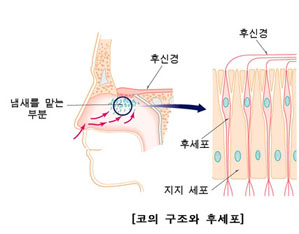
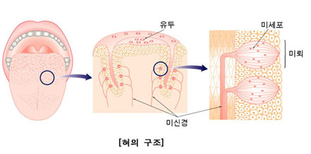

코와 혀

코
-기체 물질을 자극으로 받아들여 냄새를 맡는데, 이를 후각이라 한다.
-후각 세포는 쉽게 피로해지는 특성이 있어 같은 냄새를 오래 맡으면 그 냄새를 잘 느끼지 못하게 됨
-후각 신경 : 후각 세포에서 받아들인 자극을 뇌로 전달한다.
-후각 세포 : 기체 물질을 자극으로 받아들여 후각 신경으로 전달한다.
냄새 자극이 뇌로 전달되어 냄새를 맡는 과정
기체 상태의 물질 → 후각 상피의 후각세포 → 후각 신경 → 뇌

혀
-액체 물질을 자극으로 받아들여 맛을 느끼는데, 이를 미각이라 한다.
-혀 표면의 작은 돌기를 유두라고 한다, 유두 옆면에 있는 맛세포가 모여 맛봉오리를 이루고 있음
-혀의 맛세포에서 감지할 수 있는 기본 맛은 단맛, 짠맛, 신맛, 쓴맛, 감칠맛 다섯 가지이다.
(매운맛은 통각, 떫은 맛은 압각이다)
-미각 신경 : 맛세포에서 받아들인 자극을 뇌로 전달한다.
-맛세포 : 액체 물질을 자극으로 받아들여 미각 신경으로 전달한다.
맛 자극이 뇌로 전달되어 맛을 느끼는 과정
액체 상태의 물질 → 유두 → 맛봉오리의 맛세포 → 미각 신경 → 뇌